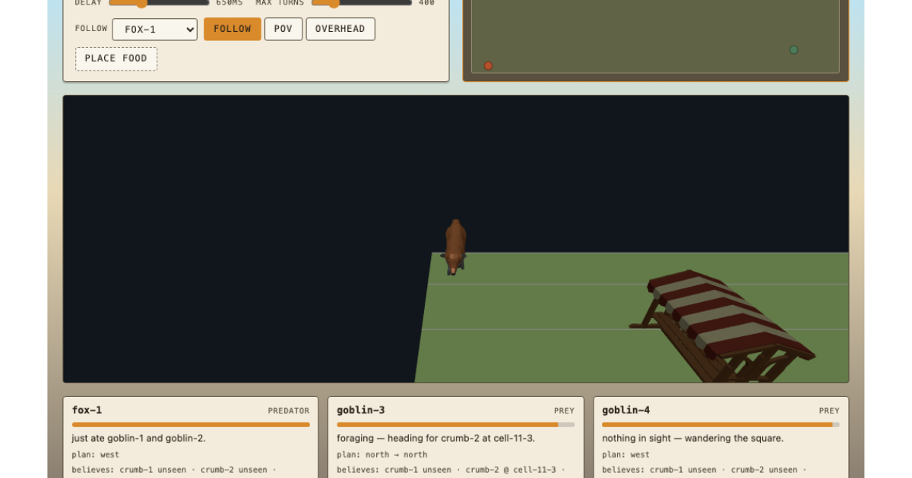
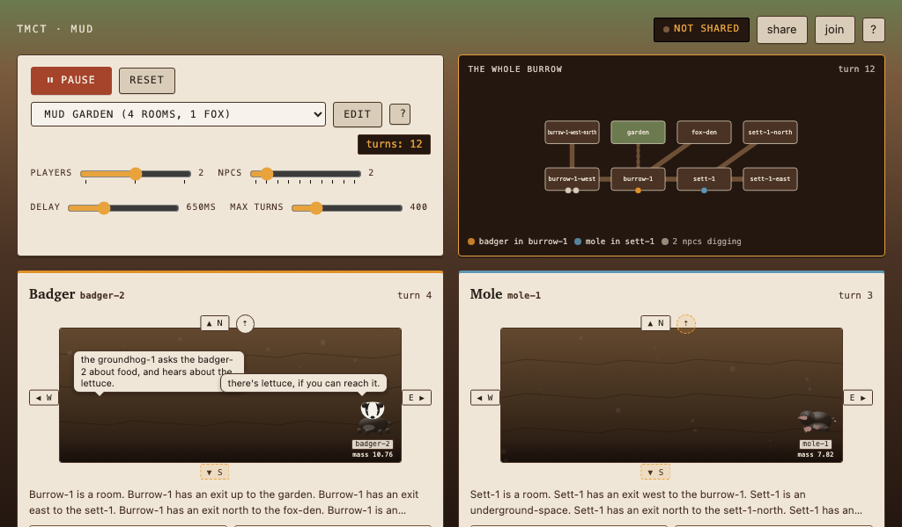

Polycode projects · pure JS · no LLM · offline · $0
tmct
Ask tmct a question and you get an answer you can check. Every fact it gives you names where it came from. When it doesn't know, it says so. Nothing calls a model, and it costs nothing to run.
$ npm install -g @polycode-projects/the-mechanical-code-talker

eleven easy pieces
Ask it anything, check every answer
The same chat engine as the CLI, running in your browser. Every answer names its source.
chat.html (opens in a new tab) About Ask it anything, check every answerEvery fact, its source, and how far to trust it
Every fact, where it came from, and how far to trust it.
ledger.html (opens in a new tab) About Every fact, its source, and how far to trust itTeach it, feed it, or let it look things up
Research a term, teach a fact, or ingest text into one graph. Then ask a question scoped to the sources you trust.
research.html (opens in a new tab) About Teach it, feed it, or let it look things upA spider hunts a fly, each planning blind
A spider and a fly each plan their own moves over the same graph, seeing only part of the board.
spider-fly.html (opens in a new tab) About A spider hunts a fly, each planning blindWatch it solve a puzzle it was taught
Tower of Hanoi solved move by move, with the plan on show as PDDL and OWL artifacts.
plan.html (opens in a new tab) About Watch it solve a puzzle it was taughtAsk a codebase what calls what
Imports, calls and members around any symbol in a code graph.
code.html (opens in a new tab) About Ask a codebase what calls whatPaste text, watch it refuse what it can't ground
Paste text. Each sentence becomes a checkable fact, or it is refused.
ingest.html (opens in a new tab) About Paste text, watch it refuse what it can't groundA fox and goblins in a 3D town square
A fox and goblins plan their own moves through a town square, each acting only on what it has seen.
mudiii.html (opens in a new tab) About A fox and goblins in a 3D town squareFour burrowers, one world, four partial maps
Four burrowing animals dig, eat, and explore one shared muddy world. Each only knows what it has personally found out.
mud.html (opens in a new tab) About Four burrowers, one world, four partial mapsthe map of the deck
What each demo demonstrates
Eleven demos, twelve capabilities between them. A tick means the demo shows that capability. An eye means it is what the demo is for. Nothing in this table calls a model: every tick is deterministic code you can read in the repository, and each demo's own about page says which files back it.
| Demo page | Natural language | Class hierarchy | RDF/OWL triples | Provenance & trust | Graph retrieval | Fact synthesis | Search backed | Classical planning | Multi-agent | Partial knowledge | Fact-driven scene | 3D rendering |
|---|---|---|---|---|---|---|---|---|---|---|---|---|
| chat.html | its focus | yes | yes | yes | yes | yes | yes | |||||
| spider-fly.html | yes | yes | yes | yes | its focus | yes | yes | |||||
| plan.html | yes | yes | yes | yes | its focus | yes | ||||||
| adventure.html | yes | yes | yes | yes | yes | yes | yes | its focus | ||||
| ledger.html | yes | yes | its focus | its focus | yes | yes | ||||||
| code.html | yes | yes | yes | its focus | ||||||||
| ingest.html | yes | yes | yes | yes | yes | its focus | ||||||
| sprites.html | yes | its focus | yes | yes | yes | |||||||
| research.html | yes | yes | yes | yes | yes | yes | its focus | |||||
| mud.html | yes | yes | yes | yes | yes | its focus | yes | yes | ||||
| mudiii.html | yes | yes | yes | yes | yes | yes | its focus |
demonstrates it it is what the demo is for
The real engine, in the page
This is the same chat engine as the CLI, running entirely in the browser: teach it something, ask it something, or run a scripted demo, and every answer names its source. The shot here is a real exchange with it; open the full page to try your own.
open chat.html → (opens in a new tab) (opens in a new tab)
(opens in a new tab)
Multiple competing planning agents
A spider waits in its web. A fly drifts onto the board and loses strength the longer it stays. Neither is played by you. Each one plans its own next move over the same graph, seeing only part of the board. You can only tell one of them something by typing to it. The spider's live plan is drawn as a thread, because a plan here already is one.
open spider-fly.html → (opens in a new tab) (opens in a new tab)
(opens in a new tab)
Classical AI Planning
Teach it a game's rules, then ask it to solve one. The planner replays every move it made, one by one, and a side panel shows the plan as a PDDL artifact and as OWL facts, so you can read exactly what it searched over. Change the disk count and it solves again, live.
open plan.html → (opens in a new tab) (opens in a new tab)
(opens in a new tab)
A room drawn from the text
Ashcombe Hall is a small manor built from its own facts. The room view shows exactly what the text says is there, and nothing else. An auto-player explores the house, infers its own goal, and plays toward it with the same planner the other pages use.
open adventure.html → (opens in a new tab) (opens in a new tab)
(opens in a new tab)
Facts as RDF/OWL triples
Browse the taught graph. Every fact shows its provenance and its trust tier, and every term inside a fact is a link, so you can drill from any answer down to what it rests on. A chat dock lets you teach and ask against the same store.
open ledger.html → (opens in a new tab) (opens in a new tab)
(opens in a new tab)
Code Index for RAG
Point it at a code graph and ask about the code: imports, calls and members around any symbol, with suggested next questions. It also holds a thread. Ask about something, then ask "what calls it?", and tmct still knows what "it" means.
open code.html → (opens in a new tab) (opens in a new tab)
(opens in a new tab)
examples/mini-webapp) using the exact same query engine the CLI
ships. It runs live, client-side. Nothing is precomputed on a server (GitLab
Pages doesn't have one). The same question against a real repo, from a terminal:
It keeps only what it can ground
Bring your own text. Paste or drop it and watch each sentence ground into a fact. A sentence the engine cannot ground gets a refusal rather than a guess. Download the result as canonical JSONL.
open ingest.html → (opens in a new tab) (opens in a new tab)
(opens in a new tab)
The sprite library
Every shape the sprite library can draw, mapped to the real ontology class it belongs to. A term without a sprite of its own borrows its nearest ancestor's, so a poodle draws as a dog.
open sprites.html → (opens in a new tab)Search backed knowledge base
One memory graph, grown three ways: research a term over Simple English Wikipedia, teach a plain fact, or ingest a paragraph. Watch what it just learned and which terms it connects. Then ask a question scoped to only the sources you check: taught, ingested, researched, or the seed corpus. Uncheck a source and its facts stop answering.
open research.html → (opens in a new tab) (opens in a new tab)
(opens in a new tab)
Competitive multi-agent system with Fact based visualisation (MUD)
A mole, a vole, a badger and a groundhog share one dug-out world, each with its own incomplete knowledge of it. Ask one to dig somewhere new and a real room opens in the shared world, there for every character who later finds it. Every window shows only what its own character has found. The one place with no fog of war is the central map, which shows every room any character has found, all at once.
open mud.html → (opens in a new tab)
(opens in a new tab)A town square in three dimensions
This page runs the same deterministic planner as the other game demos, rendered in three dimensions. A fox and a handful of goblins each plan their own next move across a shared town square. Every one of them only knows what it has personally seen, so a goblin can walk straight into a fox it hasn't spotted. Drop food on the square and watch it change what the goblins do next. No LLM plans any of it.
open mudiii.html → (opens in a new tab) (opens in a new tab)
(opens in a new tab)
Run the chat yourself
npm install -g @polycode-projects/the-mechanical-code-talkerPoint it at a repo's graph and ask about the code. This runs against
examples/mini-webapp, which ships in the repo:
tmct> what talks to store.mjs?
src/handlers/tasks.mjs and src/handlers/users.mjs.
tmct> which modules do not import logger?
…
tmct> /exitOr start with nothing. tmct bootstraps an empty memory and remembers what you
tell it. Use tmct chat --repo /path/to/repo to point it at your own.
tmct init # scaffold .tmct/, tmct.toml, seed the default persona + provenance
tmct viz # write the ledger page — see the link below
tmct syllogise # offline: pre-derive entailed facts (a maintenance job)Facts don't have to come entirely from teaching. tmct's own corpus already knows a dog can bark; teach it that Rover is a dog and it reasons the rest, citing both facts it chained through:
tmct> Rover is a dog.
noted — remembered 1 fact: rover rdfs:subClassOf dog (rover is a type of dog)
tmct> Does Rover bark?
yes — dog can bark (source: corpus:human /r/CapableOf) — via: rover is a kind of dog (source: ace:chat:<session-id>@<timestamp>)A chatbot in the ELIZA/PARRY lineage, obsessed with software the way PARRY was obsessed with the mafia. Interpretation is mechanical and memory is an OWL-labelled graph on disk. It starts stocked with an everyday vocabulary. Point it at a codebase and it reasons over that too.
Use it as a library
The chat surface is a function. Feed it lines, read the answers, and the same grounding and provenance rules apply.
import { Readable } from "node:stream";
import { runChat } from "@polycode-projects/the-mechanical-code-talker";
await runChat({
repoPath: "./my-repo",
input: Readable.from([
"ahab is the father of john\n",
"who is the father of john\n",
"/exit\n",
]),
output: process.stdout,
});Full feature list, the detailed-answer pipeline, and the rest of the library API in the README.
the project family
Polycode projects
tmct grew out of two sibling Polycode projects, and the wider family is taking up the tmct library in return.
Seonix
seonix.polycode.co.ukOne of the two sibling projects tmct's engine was seeded out of. It is upgrading onto the tmct library now.
Marginalia
marginalia.polycode.co.ukThe other sibling project tmct was seeded out of. It will build its chat and graph engine on tmct.
Bedrock Meter
gitlab.com/polycode-projects/bedrock-meterAn AWS Bedrock cost-metering proxy for marginalia. Planning is in progress to adopt tmct as its no-LLM fallback path.